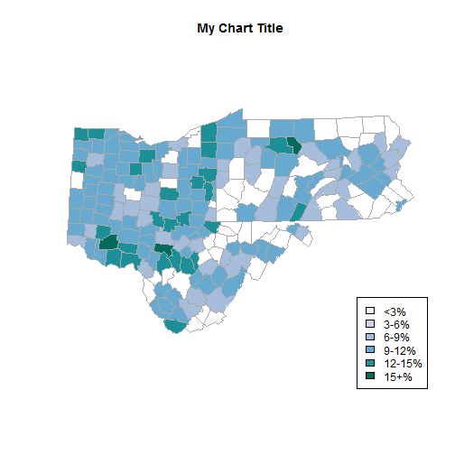

Gary W. Deinert
map("county", regions = states.shown, col = colors[working_db$colorBuckets],
fill = TRUE,resolution = 0,lty = 0, projection = "polyconic")
title(map.title)
leg.txt <- c("<3%", "3-6%", "6-9%", "9-12%", "12-15%", "15+%")
legend("bottomright", leg.txt, horiz = FALSE, fill = colors)
## Add border around each county
map("county", regions = states.shown, col = "darkgrey", fill = FALSE, add = TRUE,
lty = 1, lwd = 0.2, projection = "polyconic")

avg_unemp <- aggregate(unemp ~ state, data=working_db,mean)
total <- aggregate(pop ~ state, data=working_db,sum)
counties <- aggregate(count ~ state, data=working_db,sum)
summary_df <- cbind(avg_unemp,total$pop,counties$count)
summary_df
## state unemp total$pop counties$count
## 1 ohio 10.714773 5876843 88
## 2 pennsylvania 8.728358 6351110 67
## 3 west virginia 9.114545 791448 55
## state unemp total$pop counties$count
## 1 ohio 10.714773 5876843 88
## 2 pennsylvania 8.728358 6351110 67
## 3 west virginia 9.114545 791448 55